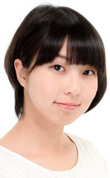

|  |
Masami Nakakouji is a Japanese voice actress
|
|---|
| |
Tsukiyo Kamiya | How to Keep a Mummy | Tsukiyo Kamiya is Tazuki Kamiya's young sister. |
Go Back to Main Page |
Go Back to Homepage |
|
|
|
OR |
|